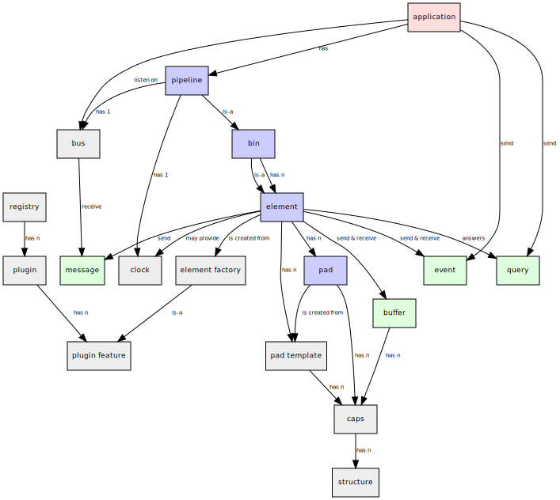

GStreamer Core
GStreamer is a streaming media framework. It uses graphs of elements which operate on data. The functionality to process media is provided by plug-ins which provide features like elements, typefinding, and so on. This allows new functionality to be added simply by installing new plug-ins.
GStreamer is cross-platform and works on most UNIX-like platforms as well as Windows. It is released under the GNU Library General Public License (GNU LGPL).

Building on UNIX
On UNIX, GStreamer uses the standard GNU build system, using autoconf
for package configuration and resolving portability issues, automake for
building makefiles that comply with the GNU Coding Standards, and
libtool for building shared libraries on multiple platforms. The normal
sequence for compiling and installing the GStreamer library is thus:
./configure make make install
The standard options provided by GNU autoconf may be passed to the
configure script. Please see the autoconf documentation or run
./configure --help for information about the standard options.
In addition there are several options to activate or deactivate
features. E.g. passing --disable-gst-debug to configure will turn
the debugging subsystem into a non-functional stub and remove all macro
based invocations from within the library (and anything compiled against
the library afterwards.)
If library size matters and one builds in a controlled environment, it is also possible to totally remove subsystem code. This is intentionally not offered as a configure option as it causes an ABI break. Code built against a version of GStreamer without these modifications needs to be recompiled.
make CFLAGS="-DGST_REMOVE_DEPRECATED -DGST_REMOVE_DISABLED"
-
GST_REMOVE_DEPRECATED- Omit deprecated functions from the library. -
GST_REMOVE_DISABLED- Omit stubs for disabled subsystems from the library.
Building GStreamer Applications
Applications and libraries can use pkg-config to get all the needed
compiler and linker flags to build against GStreamer. Please note that
GStreamer is split into several libraries itself.
pkg-config --list-all | grep gstreamer will list the available
libraries.
Running and debugging GStreamer Applications
Environment variables
GStreamer inspects a few of environment variables in addition to standard variables like LANG, PATH or HOME.
GST_PLUGIN_SYSTEM_PATH, GST_PLUGIN_SYSTEM_PATH_1_0.
This environment variable can be set to a colon-separated list of paths (or semicolon-separated list on Windows). If this variable is not set, GStreamer will fill in this list for you with
-
plug-ins in the user's home directory, or rather the user's "data home" directory according to the xdg base dir specification. Usually this will be a directory called
pluginsinside the.local/share/gstreamer-GST_API_VERSIONdirectory in the user's home directory by default, though this search path may change if the XDG_DATA_HOME environment variable is set. -
plug-ins installed system-wide. On this system, they are stored in
GST_PLUGINS_DIR.
GStreamer will scan these paths for GStreamer plug-ins. These plug-ins will be loaded after the plug-ins in the GST_PLUGIN_PATH variable below. The paths are scanned in the given order. This allows a user to override system-installed plug-ins with his own versions.
The GST_PLUGIN_SYSTEM_PATH_1_0 variant is useful if both the old GStreamer 0.10 version and the new GStreamer 1.0 version need to be pointed to new plugin paths. The latter will use the _1_0 variant over the non-versioned one if it is set.
Setting this variable to an empty string will cause GStreamer not to scan any system paths at all for plug-ins. This can be useful if you're running uninstalled (for development purposes) or while running testsuites.
GST_PLUGIN_PATH, GST_PLUGIN_PATH_1_0.
This environment variable can be set to a colon-separated list of paths (or a semicolon-separated list on Windows). GStreamer will scan these paths for GStreamer plug-ins. These plug-ins will be loaded in addition to, and before, the plug-ins in the system paths.
The GST_PLUGIN_PATH_1_0 variant is useful if both the old GStreamer 0.10 version and the new GStreamer 1.0 version need to be pointed to new plugin paths. The latter will use the _1_0 variant over the non-versioned one if it is set.
GST_DEBUG.
If GStreamer has been configured with --enable-gst-debug=yes, this
variable can be set to a list of debug options, which cause GStreamer to
print out different types of debugging information to stderr.
The variable takes a comma-separated list of "category_name:level" pairs to set specific levels for the individual categories. The level value ranges from 0 (nothing) to 9 (MEMDUMP).
- 1 -
ERROR: Logs all fatal errors. These are errors that do not allow the core or elements to perform the requested action. The application can still recover if programmed to handle the conditions that triggered the error. - 2 -
WARNING: Logs all warnings. Typically these are non-fatal, but user-visible problems are expected to happen. - 3 -
FIXME: Logs all fixme messages. Fixme messages are messages that indicate that something in the executed code path is not fully implemented or handled yet. The purpose of this message is to make it easier to spot incomplete/unfinished pieces of code when reading the debug log. - 4 -
INFO: Logs all informational messages. These are typically used for events in the system that only happen once, or are important and rare enough to be logged at this level. - 5 -
DEBUG: Logs all debug messages. These are general debug messages for events that happen only a limited number of times during an object's lifetime; these include setup, teardown, change of parameters, ... - 6 -
LOG: Logs all log messages. These are messages for events that happen repeatedly during an object's lifetime; these include streaming and steady-state conditions. - 7 -
TRACE: Logs all trace messages. These messages for events that happen repeatedly during an object's lifetime such as the ref/unref cycles. - 9 -
MEMDUMP: Log all memory dump messages. Memory dump messages are used to log (small) chunks of data as memory dumps in the log. They will be displayed as hexdump with ASCII characters.
The category_name can contain "*" as a wildcard.
For example, setting GST_DEBUG to GST_AUTOPLUG:6,GST_ELEMENT_*:4,
will cause the GST_AUTOPLUG category to be logged at full LOG level,
while all categories starting with GST_ELEMENT_ will be logged at
INFO level.
To get all possible debug output, set GST_DEBUG to *:9. For debugging
purposes a *:6 debug log is usually the most useful, as it contains
all important information, but hides a lot of noise such as refs/unrefs.
For bug reporting purposes, a *:6 log is also what will be requested
usually. It's often also worth running with *:3 to see if there are
any non-fatal errors or warnings that might be related to the problem at
hand.
Since GStreamer 1.2 it is also possible to specify debug levels by name, e.g. GST_DEBUG=*:WARNING,audio:LOG
GST_DEBUG_NO_COLOR.
Set this environment variable to any value ("1" typically) to switch off
colouring in GST_DEBUG output. This has the same effect as specifying
the --gst-debug-no-color or --gst-debug-color-mode=off command line
option to well-behaved GStreamer applications (ie. those that pass
command-line options correctly to GStreamer). This is particularly
useful to reduce the size of debug output and also allows for the output
to be compressed much better than with colours turned on.
Has the same effect as setting GST_DEBUG_COLOR_MODE environment variable to "off".
GST_DEBUG_COLOR_MODE.
Set this environment variable to change log colouring in GST_DEBUG output. Possible values:
-
on: Enables debug log output coloring. Uses default coloring method for current platform. This is the default. -
off: Disables debug log output coloring. This has the same effect as specifying the--gst-debug-color-mode=off command line option to well-behaved GStreamer applications (ie. those that pass command-line options correctly to GStreamer). This is particularly useful to reduce the size of debug output and also allows for the output to be compressed much better than with colours turned on.Has the same effect as setting GST_DEBUG_NO_COLOR environment variable to any value.
-
auto: Same ason. -
disable: Same asoff. -
unix: Enables debug log output coloring and forces the use of UNIX termial codes for coloring, even if this method is not normally used on current platform. This has the same effect as specifying the--gst-debug-color-mode=unix command line option to well-behaved GStreamer applications (ie. those that pass command-line options correctly to GStreamer). This is particularly useful to dump debug output into a file on non-UNIX platforms to be sent to developers who have viewers that support UNIX terminal codes.
GST_DEBUG_OPTIONS.
This environment variable can be used to tweak the behaviour of the debugging system. Currently the only options supported are "pretty-tags" and "full-tags". In "pretty-tags" mode (the default), taglists in the debug log will be serialized so that only the first few and last few bytes of a buffer-type tag will be serialized into the log, to avoid dumping hundreds of lines of useless output into the log in case of large image tags and the like.
GST_DEBUG_DUMP_DOT_DIR.
Set this environment variable to a path to turn on all #GST_DEBUG_BIN_TO_DOT_FILE or #GST_DEBUG_BIN_TO_DOT_FILE_WITH_TS calls and have the dot files in that location.
This will only work if the application in question makes these calls in strategic places (like when the pipeline state changes or an error occurs). gst-launch-GST_API_VERSION is one such application.
These .dot files can then be turned into images using the 'dot' utility
from the graphviz set of tools, like this:
dot foo.dot -Tsvg -o foo.svg or dot foo.dot -Tpng -o foo.png or
dot foo.dot -Tjpg -o foo.jpg.
There is also a utility called xdot which allows you to view the dot
file directly without converting it first.
GST_REGISTRY, GST_REGISTRY_1_0.
Set this environment variable to make GStreamer use a different file for the plugin cache / registry than the default one. This is useful when operating in a separate environment which should not affect the default cache in the user's home directory.
GST_REGISTRY_FORK.
Set this environment variable to "no" to prevent GStreamer from forking on startup in order to update the plugin registry. This is useful for debugging purposes, but should not be used under normal circumstances, since it means that plugins may be loaded into memory even if they are not needed by the application.
GST_REGISTRY_UPDATE.
Set this environment variable to "no" to prevent GStreamer from updating the plugin registry. This is useful for embedded device which is not updating the plugins frequently, it will save time when doing gst_init().
GST_TRACE.
Enable memory allocation tracing. Most GStreamer objects have support for tracing the number of unfreed objects and their memory pointers.
The variable takes a comma-separated list of tracing options to enable.
-
live: Counts all live objects and dumps an overview of the number of unfreed objects at program exit.
-
mem-live: Keep track of the unfreed memory pointers and dump an overview of all unfreed memory at program exit. Together with a level 9 debug log this can be used to follow the lifecycle of leaked objects in order to track down where they are leaked. This can be useful for debugging memory leaks in situations where tools such as valgrind are not available, or not an option.
Use all to enable all tracing flags.
GST_DEBUG_FILE.
Set this variable to a file path to redirect all GStreamer debug messages to this file. If left unset, debug messages with be output unto the standard error.
ORC_CODE.
Useful Orc environment variable. Set ORC_CODE=debug to enable debuggers such as gdb to create useful backtraces from Orc-generated code. Set ORC_CODE=backup or ORC_CODE=emulate if you suspect Orc's SIMD code generator is producing incorrect code (Quite a few important GStreamer plugins like videotestsrc, audioconvert or audioresample use Orc). One can also combine flags like ORC_CODE=backup,debug.
G_DEBUG.
Useful GLib environment variable. Set G_DEBUG=fatal_warnings to make GStreamer programs abort when a critical warning such as an assertion failure occurs. This is useful if you want to find out which part of the code caused that warning to be triggered and under what circumstances. Simply set G_DEBUG as mentioned above and run the program in gdb (or let it core dump). Then get a stack trace in the usual way.
G_SLICE.
Useful GLib environment variable. Set G_SLICE=always-malloc when running GStreamer programs in valgrind, or debugging memory leaks with other tools. See the GLib API reference for more details.
GST_TAG_ENCODING.
Try this character encoding first for tag-related strings where the encoding is not defined and which are not UTF-8 already. By default the current locale will be tried (if not UTF-8).
GST_TAG_ID3_ENCODING.
Try this character encoding first for ID3 tag-related strings where the encoding is not defined and which are not UTF-8 already. By default the current locale will be tried (if not UTF-8).
GST_TAG_ID3V1_ENCODING.
Try this character encoding first for ID3v1 tag-related strings where the encoding does not look like UTF-8.
GST_GL_WINDOW.
Influences the window system to use by the GStreamer OpenGL library. Common values are 'x11', 'wayland', 'win32' or 'cocoa'.
GST_GL_PLATFORM.
Influences the OpenGL platform to use by the GStreamer OpenGL library. Common values are 'egl', 'glx', 'wgl' or 'cgl'.
GST_GL_API.
Influences the OpenGL API requested by the OpenGL platform. Common values are 'opengl' or 'gles2'.
The results of the search are